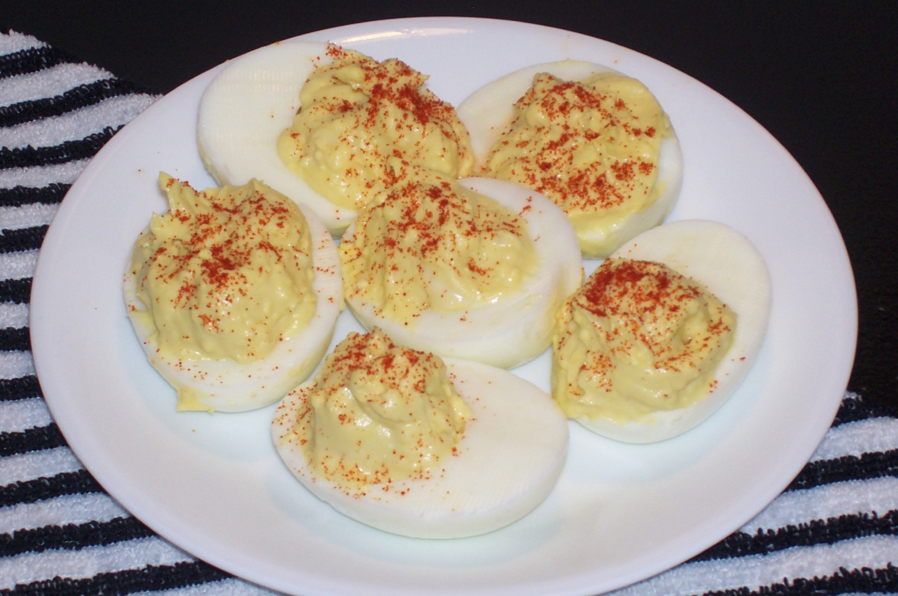

Deviled Eggs

This image is just a placeholder...
Description
This is an easy to follow recipe to make some deviled eggs with a little bit of texture from the onions and the celery.
Ingredients
- 6 hard-boiled eggs
- 2 tablespoons of mayonnaise
- 1 teaspoon white sugar, or to taste
- 1 teaspoon white vinegar
- 1 teaspoon prepared mustard
- 1 tablespoon finely chopped onion
- 1 tablespoon finely chopped celery
- 1/2 teaspoon salt, or to taste
- 1 pinch paprika, or to taste
Steps
- Gather all ingredients. Peel hard-boiled eggs
- Slice eggs in half lengthwise and remove yolks; set whites aside.
- Mash yolks with a for in a small bowl. Stir mayonnaise, sugar, vinegar, mustard, onion, and celery; mix well and season with salt to taste.
- Stuff or pipe yolk mixture into egg whites.
- Sprinkle with paprika. Refrigerate eggs until serving.
Home Page